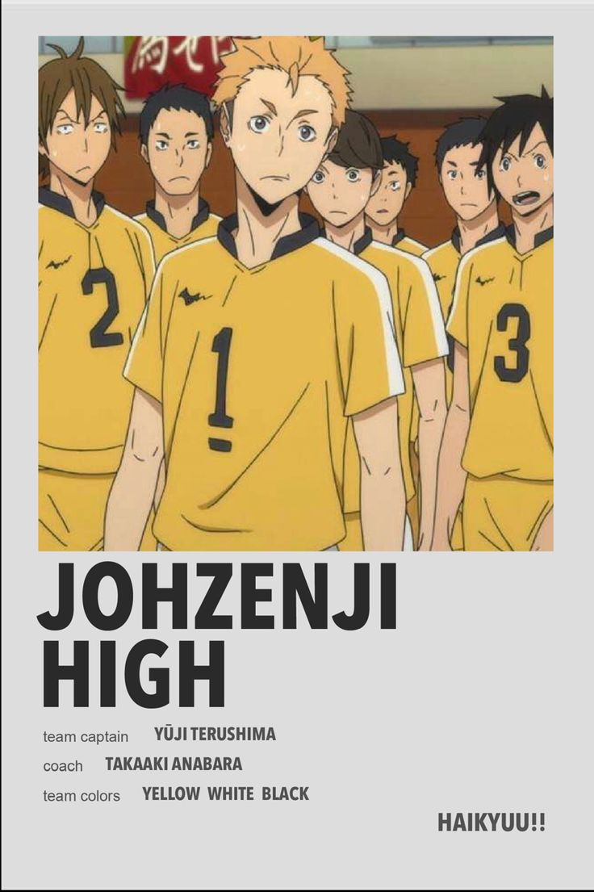

Inicio
Anime
Peliculas
Manga
Personajes
Equipos
Karasuno
Ubicacion: Sendai (Miyagi)
Nekoma
Ubicacion: Nakacho (Tokio)
Inarizaki
Ubicacion: Kansai (Hyōgo)
Black Jackals
Ubicacion: Higashiosaka (Osaka)
Aoba Jōsai
Aoba Jōsai (Miyagi)
Itachiyama
Ubicacion: Oita (Tokio)
Shiratorizawa
Ubicacion: Sendai (Miyagi)
Fukurōdani
Ubicacion: Kanto (Tokio)
Date
Ubicacion: Datekou (Miyagi)

Johzenji
Ubicacion: Johzenji (Miyagi)
Nohebi
Ubicación: Nohebi (Tokio)
Wakutani
Ubicacion: Wakutani (Miyagi)
Kamodai
Ubicacion: Prefectura Nagano
Tsubakihara
Ubicacion: Prefectura de Gifu
Ouginan
Ubicacion: Prefectura Miyagi
Karasuno
Nekoma
Inarizaki
MSBY Black
Aoba Josai
Itachiyama
Shiratorizawa
Fukurōdani
Date
Johzenji
Nohebi
Wakutani
Kamodai
Tsubakihara
Ouginan